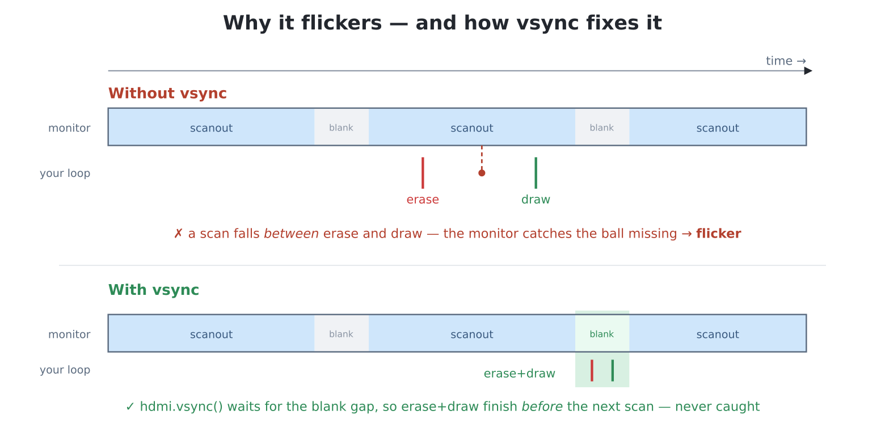
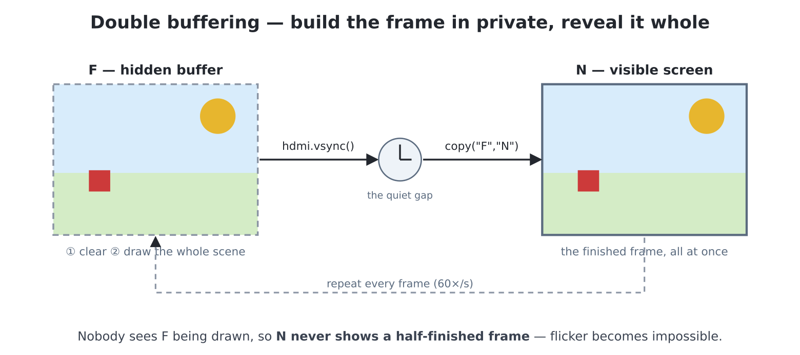
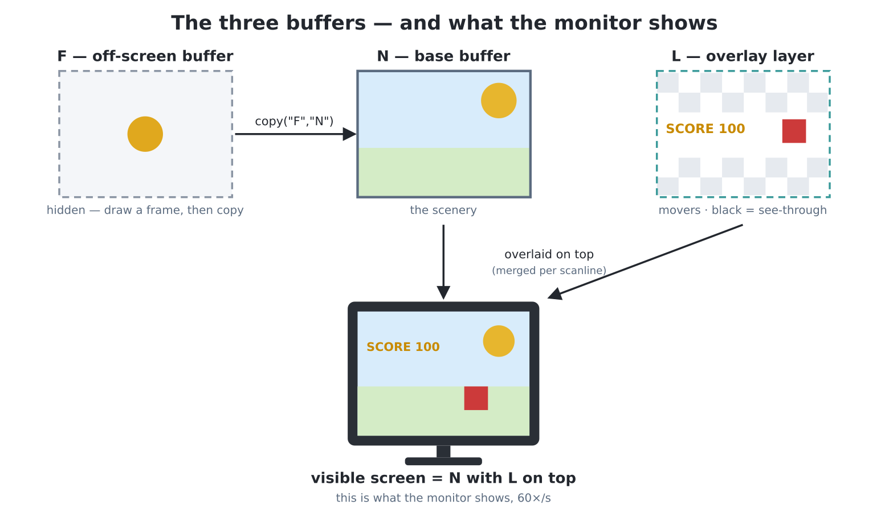

Three loose threads are dangling. Chapter 15 warned that nothing moves — motion is redrawing. Chapter 16’s robot walked, and smeared. And the living clock blinked, ever so slightly, at every erase. This chapter picks up all three and ties the knot: by the end, a bouncing ball goes from a smeared mess to perfectly smooth motion, in four stages you will reuse in every animated program you ever write. The stages are the chapter — type each one.
edit("ball0.py"):
import time
d = hdmi.fb()
W = hdmi.width()
H = hdmi.height()
d.fill(d.colour(0x102040))
x, y = 100, 100
dx, dy = 5, 3
while True:
x += dx
y += dy
if x < 12 or x > W - 12:
dx = -dx
if y < 12 or y > H - 12:
dy = -dy
d.ellipse(x, y, 10, 10, d.colour(GOLD), True)
time.sleep(0.02)A filled circle, moved by velocity (dx,
dy), bouncing by the oldest trick in games — hit an
edge, flip the sign — and smearing a golden comet trail across the
screen, because nobody ever erases the old ball. Chapter 15 told you the
truth and here it is in gold: pixels stay until overdrawn. (Admire the
trail for a minute — the bounce logic underneath it is real, and it
survives to stage 3 unchanged. Ctrl-C.)
The chapter 15 fix: paint the old ball out before drawing the new.
Copy ball0.py to ball1.py (fm’s
C does this politely) and change only the loop — one
# NEW line:
import time
d = hdmi.fb()
W = hdmi.width()
H = hdmi.height()
d.fill(d.colour(0x102040))
x, y = 100, 100
dx, dy = 5, 3
while True:
# NEW: erase old
d.ellipse(x, y, 10, 10, d.colour(0x102040), True)
x += dx
y += dy
if x < 12 or x > W - 12:
dx = -dx
if y < 12 or y > H - 12:
dy = -dy
d.ellipse(x, y, 10, 10, d.colour(GOLD), True)
time.sleep(0.02)No more smear — but watch closely (dim the room if you must): the ball flickers. Here is why, and it is a genuine race. Your loop erases, then redraws. Meanwhile core 1, on its own relentless schedule, ships the framebuffer to the monitor sixty times a second — and sometimes it ships between your erase and your redraw, catching the instant the ball doesn’t exist. The monitor faithfully shows the gap. Sixty chances a second, so it blinks like a guilty thing.

The clock blinked for exactly this reason. To fix it, you don’t draw faster — you draw at the right moment.
vsync — drawing between the framesSixty times a second the monitor finishes a frame, and there is a
tiny quiet gap — the vertical blanking interval —
before the next one starts. hdmi.vsync() waits for that
gap. Do your erase-and-draw right after it returns and the scanout
never catches you mid-move. ball2.py, whole:
d = hdmi.fb()
W = hdmi.width()
H = hdmi.height()
d.fill(d.colour(0x102040))
x, y = 100, 100
dx, dy = 5, 3
while True:
hdmi.vsync() # NEW
d.ellipse(x, y, 10, 10, d.colour(0x102040), True)
x += dx
y += dy
if x < 12 or x > W - 12:
dx = -dx
if y < 12 or y > H - 12:
dy = -dy
d.ellipse(x, y, 10, 10, d.colour(GOLD), True)Solid. And notice what else changed: the time.sleep is
gone — vsync waits for the next frame, so the loop
now runs at exactly sixty beats a second, paced by the display itself.
Free metronome; chapter 22 builds on it.
For one ball over a flat colour, this is already perfect. Its limit shows up as scenes grow: erase-and-redraw a dozen sprites, some text and a starfield, and the work no longer fits in the quiet gap — the scanout catches you half-done somewhere every frame. For that, the professional answer:
The flicker existed because the monitor could see your workbench. So
work somewhere it can’t. hdmi.create() allocates the
F buffer — a second, invisible screen, usually in the
big PSRAM (chapter 35 has a trick that parks it somewhere much faster) —
and hdmi.write("F") sends all drawing there.
Compose the entire frame in private, then copy the finished picture over
in one fast move:
# clear away any previous workbench
hdmi.close("F")
hdmi.create() # the invisible workbench
# all drawing now lands off-screen
hdmi.write("F")
# a Display over F -- AFTER write()!
d = hdmi.fb()
W = hdmi.width()
H = hdmi.height()
x, y = 100, 100
dx, dy = 5, 3
# and no console cursor over the show
console("none")
try:
while True:
# fresh canvas
d.fill(d.colour(0x102040))
x += dx
y += dy
if x < 12 or x > W - 12:
dx = -dx
if y < 12 or y > H - 12:
dy = -dy
# scene, unseen
d.ellipse(x, y, 10, 10, d.colour(GOLD), True)
hdmi.vsync()
# one clean reveal
hdmi.copy("F", "N")
finally:
hdmi.write("N") # ALWAYS hand the screen back...
console() # ...and the console with itAnd a third polish, one line each way: sharp eyes will have spotted a
tiny cursor blinking over the earlier balls — the on-screen
console’s cursor, faithfully flashing at the prompt position,
straight onto the visible screen. It is not part of your frame, so no
amount of buffering removes it.
console("none") routes console output (and
its cursor) nowhere for the duration; the finally restores
console() — the no-argument call means "both",
the power-up default. Should you ever strand yourself silent without the
collar, input still works (type console() blind and press
Enter) and RESET always restores the default.
Two more rules hide in the opening lines. The first:
create() refuses if a workbench already
exists (ValueError: framebuffer already exists) —
and since your last run’s Ctrl-C left one behind, a program that only
creates can only run once. Closing first costs nothing:
hdmi.close("F") never complains about an absent buffer, so
close-then-create is the idiom that always starts clean.
(layer() has the same manners; hdmi.close("L")
before it, likewise.)
The second bites even harder if missed:
hdmi.fb() hands you a Display over
whichever buffer is the write target at that moment.
Call it before write("F") and your d is wired
to the visible screen forever — you would then be clearing the
visible screen while everything else lands on F, which never
gets cleared, and the result is a baffling accumulating smear. The order
is always: choose the target, then take the Display. (The same
rule is why the layer example below takes a fresh fb()
after write("L").)
Now read the loop’s shape, because this is the pattern — it has a name, double buffering, and every games console and PC built since the 1980s does exactly this:
vsync, then copy — the
finished frame appears between two scans, whole.
Flicker is now impossible by construction: the visible screen only ever holds completed pictures. The cost is honest — you redraw the whole scene every frame — and the machine is built for it: the fill and copy are fast C on big memory. This is the loop the games of Part IV live in.
Now the two new lines wrapping the loop, because they are
load-bearing. hdmi.write() redirects
everything, the console included — a print while
"F" is selected lands invisibly, and so does the
>>> prompt if the program ends without
switching back. And this program only ever ends one way: your Ctrl-C,
which strikes mid-loop, exactly when the target is "F". The
cure is try: … finally: — chapter 13’s family,
one member it didn’t need until now: the finally
block runs on the way out no matter how you leave — normal end,
error, or Ctrl-C. Putting hdmi.write("N") there means the
screen is always handed back. Every F-buffer program you write gets this
collar; forget it once and you’ll meet the symptom — “my prompt
vanished” — and know it means the console is talking to the wrong buffer
(type hdmi.write("N") blind, or RESET).
Double buffering redraws everything, always. The machine offers one
more deal, philosophically opposite and unique to the two 320 × 240
modes (RGB320 and RGB320_8): the
layer — a transparent sheet of acetate over the
display, merged per scanline by core 1 in hardware-speed C. Scenery
lives below, untouched; moving things live on the acetate:
edit("layer.py") — a complete demonstration, scenery
included:
import time
screen(hdmi.RGB320)
# let the monitor lock the new mode
time.sleep(3)
d = hdmi.fb() # the display (320x240 now)
d.fill(d.colour(0x104060)) # "rich scenery": a sea...
for i in range(8): # ...with waves, drawn ONCE
d.line(0, 120 + i * 14, 319, 126 + i * 14, d.colour(CERULEAN),
2)
hdmi.close("L") # start clean (rerun-proof)
# acetate on. black = see-through
hdmi.layer()
hdmi.write("L")
s = hdmi.fb() # a Display over the LAYER
console("none")
try:
s.text("SCORE 100", 8, 8, s.colour(YELLOW))
# a sprite crosses...
for x in range(0, 280, 4):
s.fill_rect(x, 150, 16, 16, s.colour(RED))
hdmi.vsync()
# erase = draw black
s.fill_rect(x, 150, 16, 16, 0)
# wipe the acetate -- scenery unharmed
s.fill(0)
finally:
hdmi.write("N")
console()The red square crosses the entire sea and no wave is ever
repainted — the erase draws black, black means see-through, and the
scenery below was never touched. Moving a thing on the layer means
erasing and redrawing it alone. That black-is-transparent rule
cuts both ways: layer artwork should avoid pure black (or choose another
transparent colour — hdmi.layer(transparent=0xFF00FF):
magenta, chapter 16’s masking tape, moonlighting again). Score displays,
cursors and sprites over painted scenery are the natural residents;
chapter 18’s sprite engine composites here in the 320 × 240 modes
automatically. Note the demo also kept chapter 15’s manners —
time.sleep(3) after the mode change — and wore the
finally collar: the layer redirects the console exactly as
"F" does. When you’re done experimenting,
screen(hdmi.RGB640) returns you to the roomy default.
Why only 320 × 240? A pleasing bit of arithmetic: two 320×240 16-bit
screens exactly fill the video memory — the layer is the second
half. The bigger modes leave no room, which is why they use the F-buffer
strategy instead. And RGB320_8 goes one better: its
256-colour screens are half the size again, so the layer and
the F buffer fit on-chip together — the overlay and double buffering
stop being an either/or (chapter 35 tells that story with numbers).
One more motion tool, cheap and mighty. Chapter 16 showed a region
shifted over itself; hdmi.scroll(dy, colour) does the
vertical version at high speed. Neither redraws a scene — they
shove the existing pixels, and you paint only the newly exposed strip.
Credits rolls, ticker tapes, falling starfields and chapter 19’s endless
landscapes all ride on this. Try it raw, on whatever the screen
currently shows:
import time
black = hdmi.fb().colour(BLACK)
for _ in range(200):
hdmi.scroll(2, black)
time.sleep(0.02)— a slow upward departure for everything you had drawn.

| Scene | Tool |
|---|---|
| One or two things over flat colour | eraser trick + vsync |
| Whole scenes, many movers — the default for games | F buffer + vsync + copy |
| Sprites/HUD over rich static scenery (RGB320/RGB320_8) | the layer |
| Content that slides (tickers, credits, starfields) | scroll / blit-shift |
Coming from MMBasic: this is the
FRAMEBUFFERmodel with the same letters —FRAMEBUFFER CREATE/LAYER/WRITE F/COPY F,Nmap tohdmi.create()/layer()/write("F")/copy("F","N"), black is the layer’s transparent just as you remember, and MMBasic’sFRAMEBUFFER SYNCtiming discipline ishdmi.vsync().
The bouncing logo that graced a million idle DVD players — the
smooth, flicker-free version. edit("dvd.py"):
hdmi.close("F") # start clean (rerun-proof)
hdmi.create()
hdmi.write("F") # target first...
d = hdmi.fb() # ...then the Display over it
W = hdmi.width()
H = hdmi.height()
COLOURS = [GOLD, CYAN, MAGENTA, GREEN, ORANGE, LILAC]
LOGO = "PICO"
LW = len(LOGO) * 16 * 2 # font 3 at scale 2
LH = 24 * 2
x, y = 50, 80
dx, dy = 4, 3
ci = 0
bounces = 0
console("none")
try:
while True:
d.fill(d.colour(0x080810))
x += dx
y += dy
hit = False
if x < 0 or x + LW > W:
# step back inside the edge
x = max(0, min(x, W - LW))
dx = -dx
hit = True
if y < 0 or y + LH > H:
y = max(0, min(y, H - LH))
dy = -dy
hit = True
if hit:
bounces += 1
ci = (ci + 1) % len(COLOURS)
hdmi.text(LOGO, x, y, d.colour(COLOURS[ci]), -1, 2, 3)
hdmi.text(f"bounces: {bounces}", 8, H - 20,
d.colour(GRAY))
hdmi.vsync()
hdmi.copy("F", "N")
finally:
hdmi.write("N")
console()Every stage of the chapter is in it: velocity and sign-flips from
stage 0, the fill-draw-flip shape of stage 3, vsync pacing,
text as a sprite (fixed-width maths sizing the bounding box), a colour
cycle driven by %, and a bounce counter for the
connoisseurs — because everyone who has ever watched one of these is
waiting for the same event. Whether the logo can exactly strike
a corner is challenge 1; install it as /main.py at your own
social risk.
dx, dy = 12, 7,
then 1, 1. At sixty paced frames a second, which
looks faster — and what happened to the idea of “speed” now
that sleep is gone? (Chapter 22 makes this precise.)[x, y, dx, dy] — and loop over them inside the
frame. Find the number where sixty frames a second visibly falters
(watch for the motion going syrupy). That number is your first
frame budget; Part IV lives inside it.vsync/copy order, then remove
vsync entirely. Fast motion may show a horizontal
shear for a single frame — tearing, the third
demon, caught mid-copy. Put it back. (Some monitors hide it well; hunt
with high dx.)draw_jpg background. The eraser trick erases to
transparent (draw the ball in black) — and the photo never repaints.
Compare the code you did not write against stage 3.write("F") is live,
print("hello"), exit without restoring, and watch nothing
appear. Now recover — hdmi.write("N") typed blind, or
RESET. Now it will never puzzle you in the field.hit on both axes in one frame), and celebrate properly:
flash the screen, beep, and print the bounce count it took.
Estimate first: rare, common, or dependent on the starting position?
Then let it run through dinner and see.hlines
shading blue), flipping cells as they swim. F buffer, obviously. Bubbles
optional but encouraged.